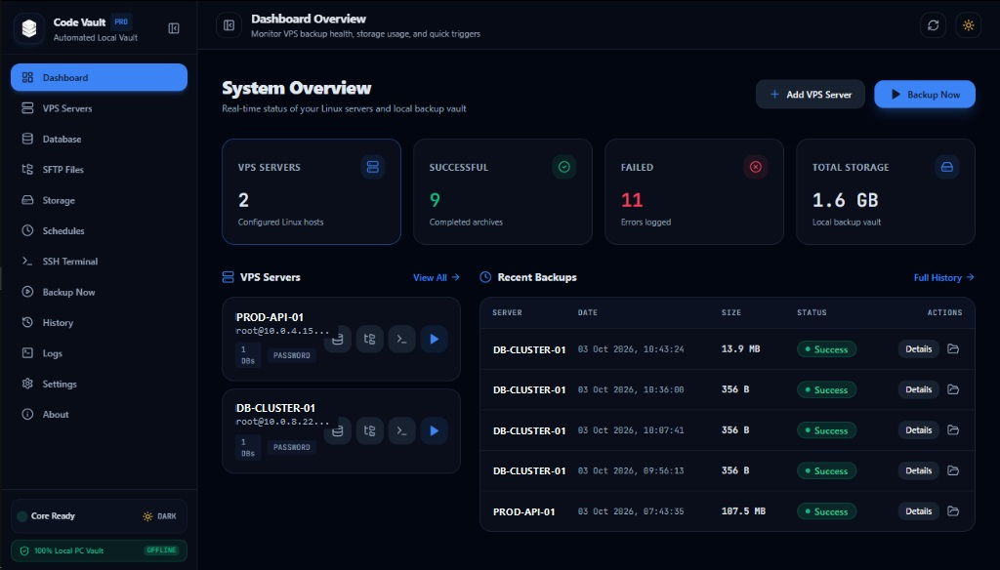

Aplikasi desktop native untuk mencadangkan source code aplikasi, seluruh database (MySQL, PostgreSQL, Redis), dan incremental media sync ke harddisk lokal & cloud Google Drive.
irm https://devoandroweb.github.io/code-vault-releases/install.ps1 | iex
Unduh dan jalankan installer resmi secara otomatis langsung dari command line.

Dirancang khusus untuk SysAdmin, Web Developer, dan DevOps yang membutuhkan kepastian cadangan data tanpa setup script cron yang rumit.
Dukungan penuh MySQL, PostgreSQL, MariaDB, Redis, dan SQLite. Fitur Semua Database otomatis mendeteksi database pengguna di VPS dan
mengekspornya menjadi berkas .sql.gz terpisah tanpa perlu mendaftarkan nama satu per satu.
Terapkan aturan standar cadangan 3-2-1: simpan di harddisk lokal dan otomatis replikasi ke Google Drive menggunakan Google Service Account atau OAuth. Dilengkapi fitur Auto-Prune untuk menghapus arsip lama.
Cadangkan folder raksasa (seperti /storage/app/public atau /wp-content/uploads)
tanpa kompresi zip lambat. Sistem membandingkan timestamp & size berkas, dan hanya mengunduh file
baru/berubah via streaming SFTP.
Tidak perlu membuka Putty atau Terminal eksternal. Akses shell VPS Anda secara langsung dengan emulasi
terminal xterm.js berkecepatan tinggi dengan auto-reconnect dan shortcut keyboard.
Inspeksi tabel database, eksekusi query SQL dengan syntax highlighting Prism, cek ukuran database, dan backup tabel secara selektif langsung melalui koneksi SSH terenkripsi.
Eksplorasi hierarki direktori server VPS, upload atau download berkas, dan pantau proses transfer file di background dengan indikator status global real-time.
Anda tidak perlu lagi mengetik puluhan nama database di server VPS satu per satu. Dengan satu klik, Code Vault Pro secara cerdas mendeteksi daftar database yang ada pada server VPS dan mengarsipkannya dengan benar.
Otomatis mengeksekusi SHOW DATABASES, menyaring
skema sistem bawaan, dan mengekspor setiap database pengguna menjadi berkas .sql.gz
terpisah lengkap dengan skema & tabel.
Mendukung format masukan spesifik seperti
app_production, billing_db, analytics untuk mencadangkan sekumpulan database pilihan
sekaligus.
Saat mode semua database aktif, nama label otomatis disesuaikan
(contoh: Semua Database MySQL) dan dikunci untuk menghindari kesalahan konfigurasi
manual.
// 1. Auto-discover all user databases SHOW DATABASES; -> Discovered: naladhipa, store_production, blog_db -> Filtered out: information_schema, sys, mysql // 2. Multi-thread stream dump & compress mysqldump --single-transaction --quick naladhipa | gzip -> File: db_naladhipa_mysql.sql.gz (24.5 MB) mysqldump --single-transaction --quick store_production | gzip -> File: db_store_production_mysql.sql.gz (112.8 MB) // 3. SFTP stream transfer to local storage / Google Drive ✓ Checksum SHA-256 verified successfully.
Standar emas pemulihan bencana (Disaster Recovery): 3 salinan data, pada 2 media berbeda, dengan 1 salinan tersimpan aman di cloud.
Arsip cadangan tersimpan langsung di folder komputer lokal Anda untuk pemulihan instan tanpa perlu mengunduh ulang berkas dari internet jika terjadi kendala pada server.
Replikasi otomatis ke Google Drive melalui Google Service Account atau OAuth 2.0. Aman jika komputer lokal atau datacenter VPS mengalami kendala hardware fisik.
Tentukan masa retensi arsip cadangan (contoh: 30 hari). Arsip yang lebih lama dari masa retensi akan otomatis dihapus untuk menghemat ruang penyimpanan.
Anda tidak perlu lagi berpindah antar aplikasi seperti FileZilla, PuTTY, dan DBeaver. Code Vault Pro menggabungkan seluruh perkakas esensial manajemen VPS dalam satu antarmuka yang bersih dan responsif.
Unduh installer resmi Code Vault Pro untuk sistem operasi Anda secara gratis.
Windows 10, Windows 11 (x64 / ARM64). Installer native .exe /
.msi.
Apple Silicon (M1/M2/M3) & Intel CPU. Berkas installer disk image
.dmg.
Ubuntu/Debian .deb, .AppImage, atau build dari
source code via cargo.
Tidak sama sekali. Code Vault Pro beroperasi 100% secara lokal pada komputer Anda. Kredensial SSH, Private Key, dan Password Database disimpan di database lokal SQLite komputer Anda dengan enkripsi standar industri AES-256-GCM. Tidak ada server perantara yang menerima data Anda.
Ketika Anda memilih opsi "Semua Database", aplikasi akan mengeksekusi query penemuan database (seperti
SHOW DATABASES; untuk MySQL), menyaring database sistem internal, lalu secara otomatis
mengekspor seluruh database pengguna yang ada di VPS menjadi file .sql.gz terpisah tanpa perlu
mendaftarkan nama satu per satu.
Tidak perlu. Code Vault Pro adalah *agentless* — ia memanfaatkan
perintah native Linux yang sudah tersedia di server VPS Anda melalui koneksi SSH standar (seperti
tar, gzip, mysqldump, pg_dump).
Folder media (seperti upload gambar blog atau e-commerce) biasanya berukuran gigabyte. Alih-alih mengompresnya setiap kali backup, Incremental Sync memindai berkas secara streaming dan hanya mengunduh file yang baru ditambahkan atau diubah sejak backup terakhir.